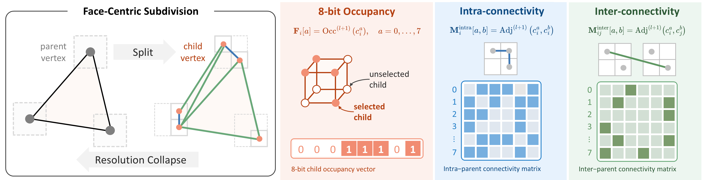
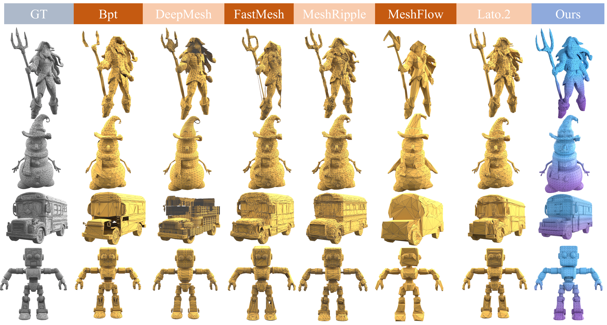

Split
Represent every parent vertex with a local child grid and select occupied child positions to increase geometric resolution.
Coarse-to-fine mesh generation
Generating compact, artist-style meshes with explicit topology typically relies on autoregressive models—which incur prohibitive sequential per-token costs—or continuous flow models that depend on heuristic connectivity decoders. Next-scale generation paradigms offer a compelling alternative by enabling parallel token prediction within each scale; yet, existing methods derive hierarchical levels via progressive mesh simplification and invert them sequentially. This eliminates intra-scale parallelism and scales generation steps linearly with face count. We propose MeshOctave, which instead defines scale through dyadic spatial grid resolutions, framing coarsening as a deterministic collapse that merges vertices sharing a voxel cell and inherits connectivity. Its inverse operation, split-and-rewire, determines which octant sub-vertices are instantiated for each coarse face and resolves local connectivity using discrete refinement tokens. Because these per-face operations require no serialization, each scale transition is modeled as an unordered set that adds one bit of coordinate precision, naturally supporting dynamic-length meshes and adaptive resolution refinement. We construct a scale-conditioned masked-uniform discrete diffusion model to learn split-and-rewire refinement from resolution collapse hierarchies. MeshOctave outperforms strong baselines in geometric fidelity and topological validity, while supporting adaptive resolution refinement and extending naturally to mesh subdivision tasks.
Core Idea
Each refinement stage expands the current mesh locally, then predicts the connections needed to turn the new samples into a coherent surface.
Represent every parent vertex with a local child grid and select occupied child positions to increase geometric resolution.
Predict intra-parent and inter-parent connections among selected children so the refined vertices form a valid mesh.

Pipeline
A masked diffusion transformer performs one learned refinement step; applying the same split-and-rewire process across resolutions turns a coarse mesh into a detailed result.

Encode parent vertices, faces, child occupancy, and local connectivity in a representation designed for refinement.
Use self-attention and conditioning features to jointly recover the masked refinement tokens at the current level.
Select occupied children, then decode intra- and inter-connectivity to construct the next-resolution mesh.
Repeat the learned refinement step across levels to scale from a compact coarse mesh to a detailed final surface.
Generation Result
MeshOctave begins with a compact mesh and repeatedly applies learned split-and-rewire refinement to generate detailed geometry and coherent connectivity.
Multi-resolution Generation
Each case shows the same generated mesh across six spatial resolutions, revealing how geometry and connectivity emerge from coarse structure to fine detail.
Application
The split-and-rewire operator refines a coarse input while recovering local geometric detail and adaptive connectivity.
Select a detail to zoom both views to the same part; manual camera movements remain synchronized.
Comparison
MeshOctave recovers detailed geometry and coherent triangulation across a range of complex shapes.
